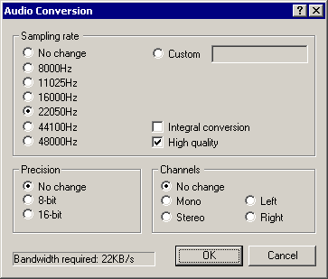

On a crash...
Dialogs: Video filters
Video frame rate control
Video color depth
Video range
Video compression
Audio filters
Audio interleaving
Audio compression
Audio conversion
Audio volume
Capture settings
Capture preferences
Capture volume meter
Preferences
|  The audio conversion dialog allows for conversion between different PCM audio formats, including changes in sampling frequency, sample precision, and channels. | Note | Audio conversion is only permitted if advanced filtering is off -- if advanced audio filtering is on, use the resample filter. | - Sampling rate conversions
- Allows changes in the sampling rate of the audio stream, without changing the pitch of the audio itself (resampling). You can select one of the common sampling rates, or custom to resample to any other rate. Higher sampling rates represent higher frequencies better and give "brighter" audio, but consume more space.
- Integral conversion
- Forces the conversion to operate by integral multiplies (one-half, one-third, twice, three times, etc). Use this if you want to convert to a integral factor of the original rate that's close but not exactly the same as one of the listed values, i.e. 22047.5Hz. If the frequency you select is exactly what you want then this option should be unchecked.
- High quality
- Switches the resampling filter from point sampling to a triangle filter for better quality. This reduces aliasing, which sounds like noise or halo in the output.
| Note | The sampling rate converter controlled by this dialog is rather antiquated and not very high-quality by today's standards. The resample filter introduced in VirtualDub 1.5 uses a 65-point windowed-sinc filter and produces better quality than the triangle filter allowed here. It is slated to replace this resampler as the primary resampler in a later version. | - Precision
- Controls the accuracy of audio samples -- 8-bit samples only take half as much space as 16-bit, but can't represent soft sounds as accurately and have a higher noise floor.
| Note | 8-bit should really only be used if you are outputting uncompressed PCM to another program that needs it, or aren't changing existing 8-bit PCM. Otherwise, instinctually choose 16-bit. Modern audio codecs work in different audio representations, such as subbands or cosines, and thus don't get better compression with 8-bit source than with 16-bit. | - Channels
-
Allows conversion of stereo audio to mono or mono to stereo. For stereo-to-mono conversions, the two channels are summed at half amplitude ((l+r)/2). For mono-to-stereo conversions, the single channel is replicated into the left and right outputs. The left and right options convert a stereo stream to mono by discarding the unwanted channel. This is particularly useful for some dual-language or karaoke produced, where two mono streams are stored as the left and right channels of a stereo track. | Note | For simple audio encodings such as PCM or ADPCM, dropping a stereo stream to mono halves the size of the audio stream. More complex encodings such as MP3, however, can encode a stereo stream as "center" and "side" tracks or volume differentials (mid/side and intensity modes of joint stereo). Such methods take advantage of similarities between the stereo channels and can make stereo relatively cheap to encode over mono. | - Bandwidth required
- Shows how much space would be required per second of audio without compression (uncompressed PCM), in kilobytes per second (KB/s). CD-quality audio, for instance, requires 172KB/sec (176,400 bytes per second).
|